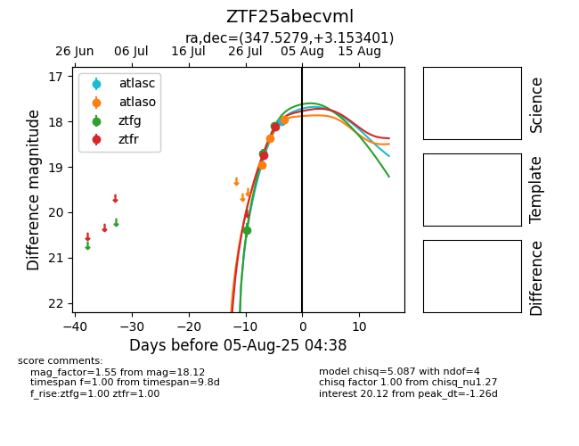

Target ZTF25abecvml at 2025-08-05 04:38, see:
FINK: fink-portal.org/ZTF25abecvml
Lasair: lasair-ztf.lsst.ac.uk/objects/ZTF25abecvml
ALeRCE: alerce.online/object/ZTF25abecvml
alt names
ZTF25abecvml (ztf,fink)
coordinates:
equatorial (ra, dec) = (347.5279,+3.15340)
galactic (l, b) = (80.0781,-51.08801)
photometry
last atlasc=17.99, atlaso=17.97, ztfg=18.09, ztfr=18.12
1 atlasc, 3 atlaso, 3 ztfg, 2 ztfr detections
